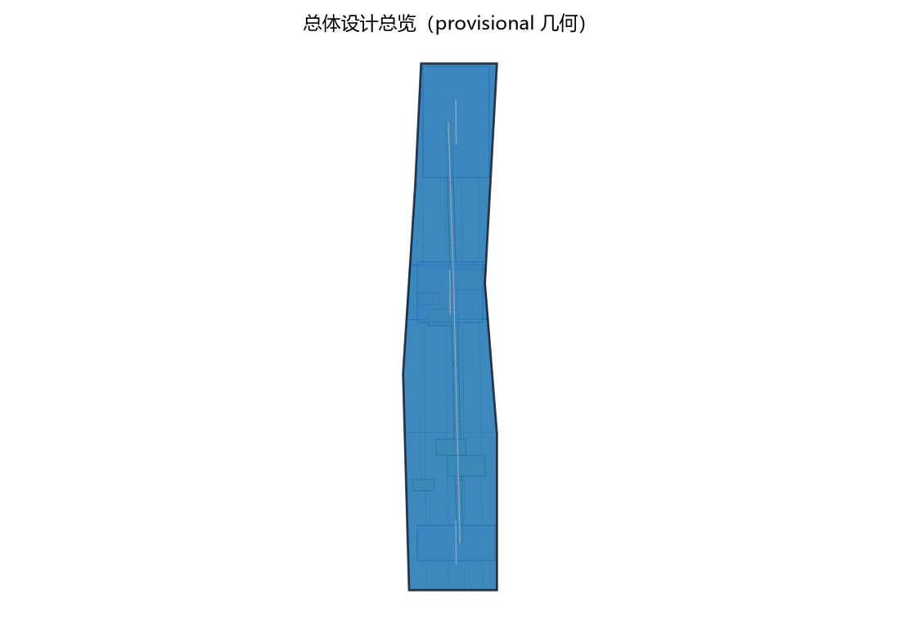
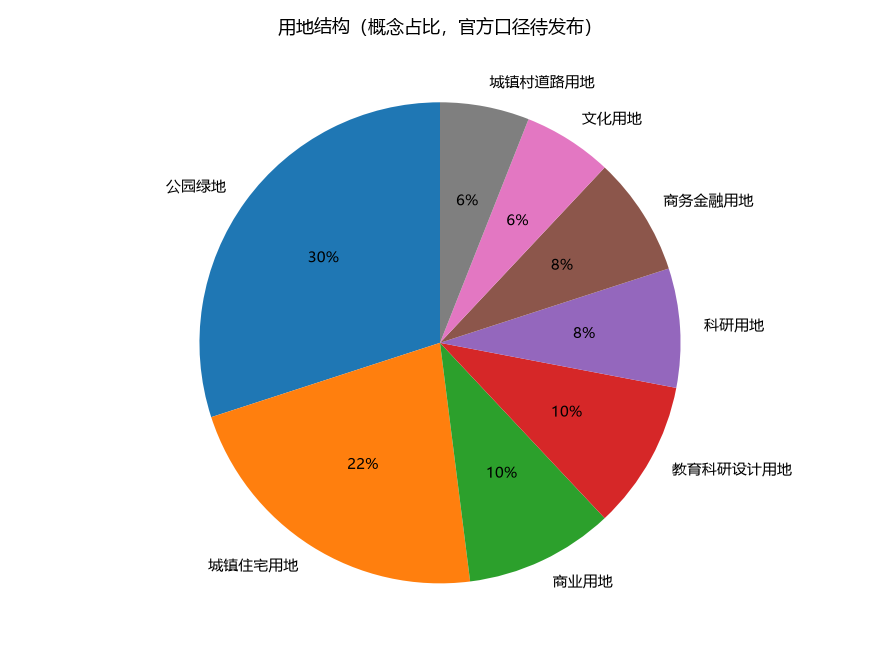
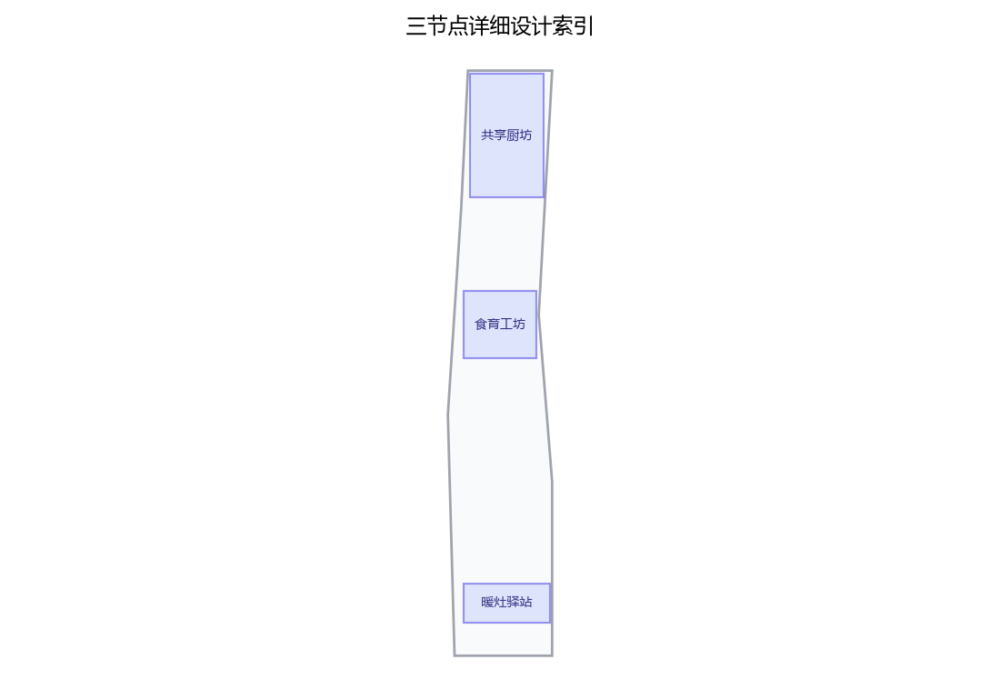
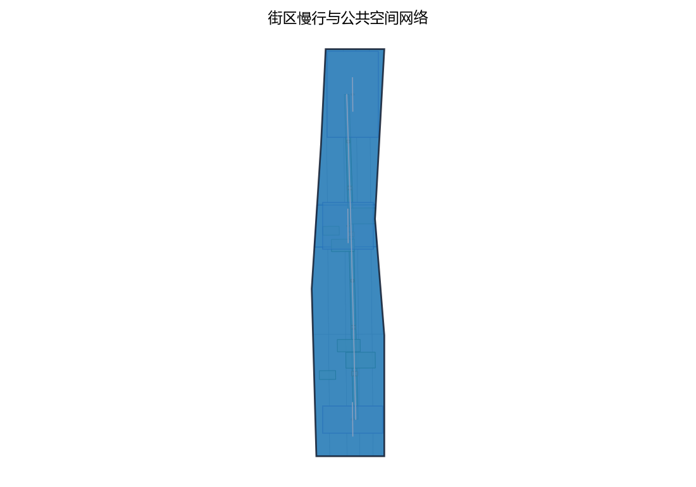
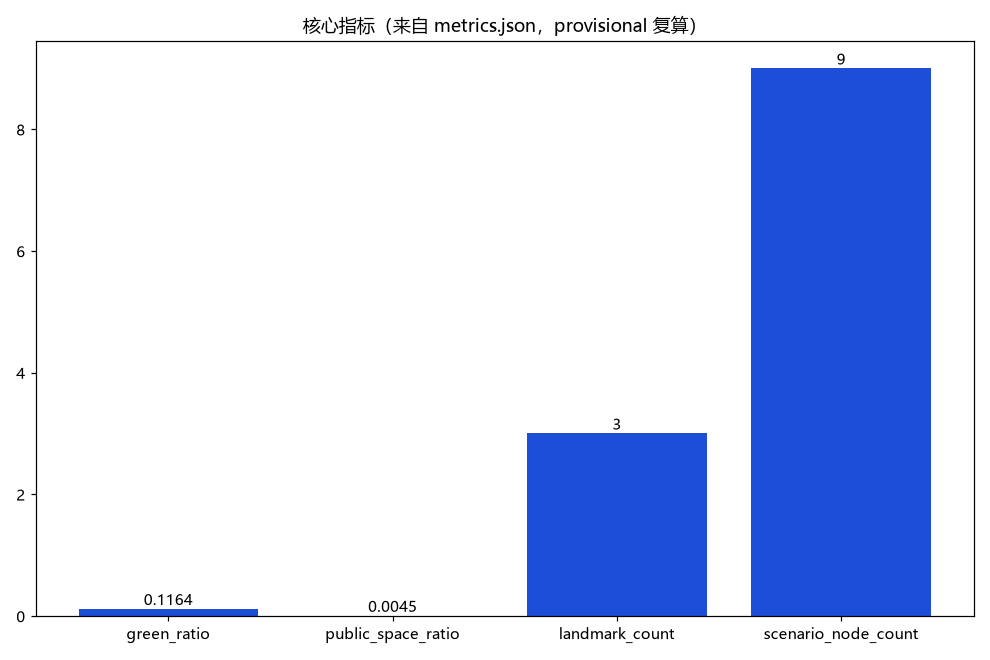

暖灶智环：社区厨房与助餐服务网络（概念）
以「暖灶智环（KIT·JZ · 社区厨房与助餐服务网络）」构建沿京张AI创新带的社区厨房专项概念（对应公开任务书公共服务设施维度、全龄友好生活维度与一刻钟便民生活圈公开政策方向）：以「一坊一圃一灶」组织助餐与服务网络，「共享厨坊」为社区食堂与主厨基地（众智园侧：全龄共餐、热餐堂食与外带、小份菜与明厨亮灶）、「食育工坊」为青年共享厨房与食育课堂（AI原点社区侧：共享操作台、预约制共用、儿童食育与青年厨艺社群）、「暖灶驿站」为长者助餐与热餐自提驿站（大钟寺侧：助餐登记、营养餐分装、送餐中转与见守联动），三节点沿京张绿带组织连续的社区厨房服务动线；五类AI+场景（助餐调度AI、食材余量AI、营养配餐AI、食安提示AI、订餐客服AI）仅处理匿名聚合数据、关键决策人工复核、禁止过度监控（不进行个体识别式追踪）；要素机制均为概念建议：助餐服务积分、共享厨房预约与使用公约、食材余量调剂与反浪费、食安与营养公示、居民食育议事；对标案例（北京社区养老服务驿站与长者助餐公开方向、上海社区长者食堂公开实践、新加坡小贩中心与公共餐饮公开经验、日本独居老人配餐与见守服务公开实践、芬兰学校午餐公共餐饮制度公开经验）仅按公开渠道信息概述；交通慢行优先、蓝绿空间低干预融合布置，三项formal核心指标（site_area_sqm、green_ratio、public_space_ratio）以本包几何复算、面积以官方文本口径为底，分期实施+年度复算与公示计划。全部为概念建议、参考方案，不给出容积率、建筑高度、具体拆改留、餐食定价、客流、产能、投资测算或工程实施结论，不编造任何官方数据、助餐人数、餐次、补贴或政策承诺，不把设想写成已确定安排，基于 provisional 边界，官方数据发布后复算。
第49号方案包·概念建议草案。核心结构为"一坊一圃一灶"：共享厨坊、食育工坊、暖灶驿站三个节点织入一刻钟便民生活圈，配套五类 AI+ 助餐场景与五项要素机制。本文全部内容为开放共创的概念建议与参考方案，供专业团队深化研究，不构成规划审批、工程实施或投资结论。
设计依据与资料清单
主控依据为征集公告与面向智能体任务书摘录，含三大定位（百年京张文化带、都市AI生活体验带、AI融合创新带）、五大功能、三区两翼布局与 agent.1—6 任务，以及"概念建议属性、公开资料边界、人类最终判断"等共创章程与边界条款；公开政策方向对应一刻钟便民生活圈建设与社区养老助餐服务的公开表述，仅作方向性依据。资料清单包括：任务书摘录与全文摘录、投稿技能文件（提案结构、硬规则与正式包要求）、参考样例方案（章节风格、指标体系与合规表达）、场地包公开来源登记及临时边界几何。仓库当前没有官方总体边界与重点区 polygon，本草案范围一律采用临时粗略约束（official_boundary=false、geometry_role=provisional_constraint），仅用于内容设计与展示；官方图形到位后按同一算法替换复算。容积率、建筑高度等依赖未公开官方控制条件的指标保持待确认，不制造精确感。对标案例仅按公开渠道概述机制方向，不构成背书与规模依据。
证据锚点：来源、来源（组织方公告与任务书为文本口径依据）。
三层范围工作框架
三层范围由"问题—空间—运营—证据—退出"责任链贯通。统筹研究范围回答助餐服务网络如何成为带级公共价值与 AI 生态接口：以社区厨房为支点研究产业、人才与未来城市关系，产出五项要素机制与对标案例转译。总体设计范围回答存量城市如何织入一刻钟便民生活圈：以"一坊一圃一灶"三节点与助餐慢行动线落实用地、交通、市政与公共空间概念。重点区域范围回答三处片区如何差异化落地：共享厨坊（众智园侧）、食育工坊（AI原点社区侧）、暖灶驿站（大钟寺侧）分别形成堂食、共厨、助餐三种公共原型与五类 AI+ 场景落点。每一层都以居民可感知结果验收：统筹层看机制可移交性；总体层看步行圈连续与节点可达；重点层看服务履约、食安合规与意见闭环。任何证据缺口（权属、文保、市政接口、运营主体）均记为停止条件，不假设成立。三个范围的成果相互输入：统筹层机制决定总体层节点分级，总体层空间决定重点层界面深度，重点层反馈修正机制设计，形成双向校准的滚动闭环。
| 层级 | 核心问题 | 本方案回答 | 主要成果 |
|---|---|---|---|
| 统筹研究范围 | 助餐网络如何成为生态接口 | 五项要素机制、五项案例转译 | 机制清单与转译表 |
| 总体设计范围 | 存量如何织入便民生活圈 | 三节点加助餐慢行动线 | 用地、交通、市政、分期概念 |
| 重点区域范围 | 三片区如何差异化落地 | 堂食、共厨、助餐三原型 | 节点详设与场景落点 |
证据锚点：来源（三层范围划分依据任务书官方文本口径）。
统筹研究范围产业与未来城市研究
三大定位转译为助餐表达：百年京张文化带，延续京张铁路的班次、交接与服务纪律，把铁路服务文化转为社区餐桌文化；都市AI生活体验带，助餐是每日高频、全龄可感知的 AI+ 生活体验；AI融合创新带，五类 AI 场景在真实餐饮供应链上验证"匿名聚合、人工复核"的治理范式。五大功能映射：众智园全栈自主创新体系在共享厨坊验证调度与食安工具栈；世界级创新生态借食育工坊形成开发者与居民共创界面；AI+ 场景赋能与智能化活力城市落实为步行圈内的助餐节点；AI治理话语权来自"登记仅履约、AI仅聚合"的公开治理实践。三区两翼回路：三节点分别服务三处重点片区，两翼提供机制接口——中关村科技服务翼面向配餐供应链服务能力，小月河场景赋能翼串联公共体验路径。要素机制五项：助餐服务积分、共享厨房预约与使用公约、食材余量调剂与反浪费、食安与营养公示、居民食育议事，均为概念机制，待社区与主管部门确认。
| 案例（公开渠道概述） | 可借机制 | 京张转译 | 不搬 |
|---|---|---|---|
| 北京养老服务驿站与长者助餐公开方向 | 驿站嵌入社区、助餐分级覆盖 | 暖灶驿站嵌入社区服务簇 | 补贴与考核口径 |
| 上海社区长者食堂公开实践 | 堂食加外带、长者优先时段 | 共享厨坊全龄共餐与小份菜 | 密度与运营规模 |
| 新加坡小贩中心公开经验 | 集中管理、明码公示、公共卫生 | 明厨亮灶与公示机制 | 经营与空间模式 |
| 日本独居老人配餐与见守公开实践 | 配餐与自愿关怀联动 | 见守仅限自愿登记履约 | 任何持续监控做法 |
| 芬兰学校午餐公共制度公开经验 | 制度化公共餐饮与营养标准 | 食育课堂与营养公示 | 免费供应与财政安排 |
证据锚点：来源（边界为 provisional，研究范围仅作概念示意）。
总体设计范围城市更新与控规深度城市设计
总体结构为"一坊一圃一灶"三角节点网络，以助餐慢行动线相连，嵌入一刻钟便民生活圈。三节点均按存量优先、可逆轻改造原则落位：概念选址类型为社区配套用房、养老驿站邻接空间与可改造底商，不预设具体地块，不作出任何拆改留结论。控规深度以"问题—空间对象—指标—资料缺口—复算路径"表达：每个节点记录服务问题、功能包络、概念指标、待补调查与官方数据到位后的复算方式，不替代法定控规，不作容积率、高度、退线判断。城市更新思路为小切口、快见效、可迁移：先以暖灶驿站验证助餐公约，再扩展厨坊堂食与食育共厨；涉及遗址、文保、权属与市政接口的动作，一律留待正式调查后由专业团队重新定位。节点间距按一刻钟步行生活圈公开方向示意，不作服务半径承诺。概念范围基于临时总体边界的复算值（约 1,141.28 万平方米），仅描述替代几何，不是官方红线。


证据锚点：来源、来源。
重点区域详细设计
共享厨坊（众智园侧）：功能为社区食堂与主厨基地，提供全龄共餐、热餐堂食与外带、小份菜与明厨亮灶；空间概念由堂食区、明厨操作区、取餐回盘动线、外带窗口与后场仓储组成；公共体验界面为连续玻璃明厨、当日菜单与营养公示栏、意见簿与人工求助位，公众可直接监督烹饪与卫生。食育工坊（AI原点社区侧）：功能为青年共享厨房与食育课堂，预约制共用操作台、儿童食育课程与青年厨艺社群；空间概念为操作岛、个人储物柜、授课演示区、清洗间与门前小圃；界面为预约公示栏、使用公约墙与食谱作品展示，强调共同使用、互相约束。暖灶驿站（大钟寺侧）：功能为长者助餐与热餐自提驿站，含助餐登记、营养餐分装、送餐中转与见守联动；空间概念为登记台、分装台、保温柜、中转架与短暂停留座椅；界面为大字高对比导视、保温取餐柜与人工台并置、见守联动说明卡（自愿登记，仅服务履约）。三节点均采用低层存量优先、耐久可修、低眩光原则，高度、层数与立面不作无依据承诺；节点定位仅依据三处临时重点区范围线索（约 192.9 公顷、104.3 公顷、72.0 公顷的粗略替代几何）。
| 原型 | 功能 | 空间部件（概念） | 公共界面 |
|---|---|---|---|
| 共享厨坊 | 全龄共餐、堂食外带、小份菜 | 堂食区、明厨区、取餐动线、外带窗口 | 玻璃明厨、公示栏、意见角 |
| 食育工坊 | 预约共厨、食育课堂、青年社群 | 操作岛、储物柜、授课区、清洗间、小圃 | 预约栏、公约墙、作品展示 |
| 暖灶驿站 | 长者助餐、分装、中转、见守 | 登记台、分装台、保温柜、中转架 | 大字导视、保温取餐柜、见守卡 |

证据锚点：空间数据（三节点示意多边形来自本包 geometry/key_areas.geojson）。
AI 创新生态、人才画像与 AI+ 场景
用户画像五类以上：独居长者，热餐自提、送餐中转与自愿见守联动；双职工家庭，外带小份菜与预约取餐；考研与自习青年，食育工坊共用操作台与错峰热餐窗口；儿童与家长，食育课堂与亲子共厨；新就业群体，快速取餐动线与错峰热餐；另含助餐志愿者与养老服务人员等协作画像。每类画像均有现场、电话、纸本等非数字路径，可拒绝数字工具。五类 AI+ 场景卡要点：助餐调度AI，生成排班与配送顺序候选，由调度员复核；食材余量AI，临期食材余量通告与调剂候选，服务反浪费；营养配餐AI，依公开膳食指引生成周菜单草案，营养师复核；食安提示AI，保质期、留样与召回通报候选，食安专员复核；订餐客服AI，常见问答与订餐状态草稿，人工客服兜底。共同边界：普通服务先行，AI 只出草案与候选，不自动决定、可随时移除；数据仅匿名聚合（预约时段分布、菜品余量等），登记信息仅用于服务履约，不做个体识别式追踪。
| 场景 | 主要落点 | 空间载体 | 运营与人工复核 |
|---|---|---|---|
| 助餐调度AI | 暖灶驿站、共享厨坊 | 调度台、公示屏 | 调度员复核班次路线 |
| 食材余量AI | 共享厨坊 | 后场余量板 | 厨师长确认调剂去向 |
| 营养配餐AI | 三节点 | 菜单公示栏 | 营养师审签 |
| 食安提示AI | 共享厨坊 | 明厨公示屏 | 食安专员复核 |
| 订餐客服AI | 三节点 | 电话与人工台 | 客服兜底、纸本回执 |
证据锚点：来源（AI 生成内容治理表述的参照依据）。
用地、建筑规模与拆改留方案
用地表达为插入式社区服务节点概念：三节点是功能与服务责任结构，嵌入存量建筑或社区配套空间，不改变法定用地性质、不新增用地分类；官方控规到位后以同一算法重切复算。建筑规模只给层级概念、不给数值：共享厨坊体量最大（堂食加后场）、食育工坊居中（操作岛加课堂）、暖灶驿站最小（登记加分装加保温）；不承诺基底面积、层数与总规模。拆改留执行四步：先核实现状、权属与文保；满足安全与功能则保留；需要无障碍、消防、排烟与节能改造则轻改；不满足或冲突则移位或删除概念部件。没有调查就不提出拆除面积，容积率、建筑高度与具体拆改留结论保持待确认，待官方边界、控规与建筑调查后复算。三节点建筑的概念尺度与街道界面采用与沿线既有建筑协调的檐口与材质语言，具体尺寸留待结构、消防与无障碍专业深化；官方控规中的用地性质与退线要求将是复算与选址的硬约束。全部空间落地建议表述为"概念建议、参考方案、可供专业团队深化研究"。
证据锚点：来源（用地分类名称参照现行国标口径）。
交通、轨道、市政与公共服务设施
送餐慢行动线概念：以暖灶驿站为配送中转原点，向周边居住区延伸送餐慢行支线，与就近轨道站点（大钟寺站等，仅作公开线索示意）形成"轨道+慢行+保温箱"的最后一公里接驳概念；不给出道路线形、轨道线位与工程结论。助餐节点与社区步行圈关系：三节点均布局于社区步行圈内可达位置，与养老驿站、社区卫生与社区服务中心构成"一站多能"服务簇概念；节点间距与服务半径按一刻钟便民生活圈公开方向示意，不作为承诺。市政接口为概念示意：共享厨坊与食育工坊的排烟净化（油烟净化、降噪、排放口位序）与给排水接口（隔油、沉淀概念）均按"先调查、后设计、再接入"表述，不给出能耗、容量与工程量结论。慢行支线沿途设置遮阴座椅、保温暂存点与大字导视，保证风雨与夜间条件下的取送体验；节点车流采用与社区共享的柔性管理概念，不新增独立车行设施。公共服务设施强调大字多语言导视、无手机等价路径与明厨亮灶可视监督；设施须有维护责任人、巡检频率与停用条件。
证据锚点：来源（市政与慢行设计表述的方法参照）。
蓝绿空间、公共空间与城市风貌
"一圃"落实为食育工坊门前小圃与社区共建菜园概念，构成三节点中的蓝绿锚点：小圃承担食育观察与香草叶菜种植体验，与厨坊食材余量调剂形成"圃—灶"循环叙事；节点间以可移动花箱、遮阴座椅与连续无障碍铺装联系。公共空间分层设置三处公共界面：厨坊外摆堂食区、驿站停留座椅、食育小圃，均满足不依赖网络与 AI 也完整可用，不把传感器作为开放条件。小圃与节点绿化采用耐旱低维护植物与本地适生种，减少浇灌与养护依赖；设施部件一律可替换、可停用，维护责任落实到人。风貌以"暖灶"为主题：暖色砖陶质感、连续檐下空间、明厨透明界面与低眩光夜景，体现烟火气与秩序感，不搞网红化与快餐化表皮。绿地与公共空间将绘制为与总体边界同源的设计几何：绿地率与公共空间率按相关几何面积除以总体范围面积计算（EPSG:4548 投影复算），当前为 provisional 低置信度状态；官方边界、控规与绿地认定规则到位后全量复算，视觉指标同步更新。

证据锚点：来源（蓝绿空间组织的方法参照）。
更新项目清单、实施政策与分期计划
三类概念项目清单：食堂堂食类（共享厨坊），含堂食区改造、明厨亮灶、小份菜与反浪费机制；共享厨房类（食育工坊），含共用操作台、预约与使用公约、食育课堂；助餐驿站类（暖灶驿站），含助餐登记、营养分装、送餐中转与见守服务台。每类项目包记录内容、牵头类型、验收条件与停止条件，不包含投资测算与采购承诺。分期实施为概念节奏：近期 1—3 年，暖灶驿站试点起步，建立助餐登记、食安许可与公示流程，食育工坊开放预约操作台；中期 3—5 年，共享厨坊堂食与小份菜机制成熟，五类 AI 场景按"影子验证—人工复核—决定去留"次序分阶段上马，要素机制制度化；远期 5—10 年，三节点连片成网，"圃—灶"循环、余量调剂与助餐积分机制稳定运行，形成可复制推广的社区厨房网络模板。各期表述均为概念节奏，非已确定安排，不构成开工、投资与政策承诺。项目包之间以暖灶驿站为起点形成"接得住、看得见、撤得回"的传导逻辑，任何一期停项不影响其余各期独立推进。
证据锚点：来源（分期与实施条目对应任务书要求）。
指标体系、面积复算与合规矩阵
概念指标体系分三层描述：空间层（三节点、助餐慢行动线、公共界面数量）、运营层（小份菜供应、食安与营养公示、意见闭环，作概念运营指标不作承诺）、数据层（AI 场景匿名聚合指标）。所有数值分三类：可从提交几何复算的 known；依赖未公开官方控制条件的 unknown（容积率、建筑高度，数值置空并说明原因）；需运营基线后设定的绩效阈值。三项 formal 核心指标以 provisional 几何复算：site_area_sqm 取自临时总体边界 PROV-SITE-001 在 EPSG:4548 下的复算值约 11,412,825 平方米（低置信度，来源 DATA-SRC-PROVISIONAL-BOUNDARIES-20260605，公式为多边形环面积累加）；green_ratio 与 public_space_ratio 以同一边界为分母、以本方案后续绘制的 green_space 与 public_space 几何为分子复算（公式：绿地率=绿地几何面积/总体面积，公共空间率=公共空间几何面积/总体面积），本草案尚未绘制设计几何故暂不发布数值，不以脱离几何的占位值代替；正式数据（官方边界、控规与绿地认定规则）发布后触发全量复算，并同步 visual/index.html 的 data-value。合规矩阵逐条连接公告、任务书（agent.1—6）、正文、指标与资料来源；本草案为概念骨架，正式投稿包须补齐矩阵、来源与自检文件。

证据锚点：指标、指标、来源。
风险、版权与合规说明
主要风险：临时边界被误读为法定红线；食安许可与操作规范缺失导致运营风险；助餐积分被误解为补贴承诺；AI 场景由匿名聚合漂移为个体追踪；概念活动被表述为已确定安排。对应措施：空间可移位、节点可独立停项、AI 仅出草案与候选、登记仅用于履约。运营合规底线：助餐与厨房运营须依法取得食品经营许可，落实明厨亮灶、食品留样与《反食品浪费法》要求；营养餐分装与长者特殊饮食遵循营养与医疗专业意见；居民意见通道（意见簿、电话、食育议事）公开可查并逐条回应。见守联动仅限长者自愿登记，按约定对未取餐等履约情形作人工关怀回访，不做位置追踪与图像监控；订餐与助餐登记信息仅用于服务履约，AI 场景仅匿名聚合，不进行个体识别式追踪；隐私边界以个人信息保护相关法律为底线，正式实施前须专业合规复核。版权说明：本文文字为原创；对标案例仅按公开渠道概述机制方向，不复制受版权保护的图片、Logo 与文本，不提及未经授权的真实企业商标。全部成果为开放共创建议，不替代正式规划，不构成政府审定结论。
证据锚点：来源（征集规则为权属与合规表述的依据）。
参考资料
本草案的机器登记索引（sources.json、metrics.json、compliance_matrix.json、assumptions.json、self_check.json）将在正式投稿包中补齐，以下为人类可读的来源索引。
| 类别 | 来源与用途 |
|---|---|
| 任务书 | 面向智能体任务书摘录与全文摘录：三大定位、五大功能、三区两翼、agent.1—6、边界条款与禁止性表述清单 |
| 征集规则 | 投稿技能与正式投稿指南：提案结构、硬规则、正式包结构与自检要求 |
| 样例 | 参考样例方案：章节风格、指标体系、合规与版权表达 |
| 场地包 | 临时边界几何（PROV-SITE-001、PROV-KEY-001—003 等）与公开来源登记 |
| 公开政策方向 | 一刻钟便民生活圈建设公开方向（政策方向性依据） |
| 对标·北京 | 社区养老服务驿站与长者助餐公开方向（概述） |
| 对标·上海 | 社区长者食堂公开实践（概述） |
| 对标·新加坡 | 小贩中心与公共餐饮公开经验（概述） |
| 对标·日本 | 独居老人配餐与见守服务公开实践（概述） |
| 对标·芬兰 | 学校午餐公共餐饮制度公开经验（概述） |
| 待补资料 | 官方边界与控规、权属、文保、市政与建筑调查；正式投稿包须补齐 sources.json、metrics.json、compliance_matrix.json 等机器索引 |
以上对标案例仅概括公开渠道的机制方向，具体做法与数据以各官方发布为准；本草案引用的面积数值均为临时几何复算值，仅用于概念表达，正式数据发布后复算替换。
证据锚点：来源（本清单首条即组织方公开资料包）。